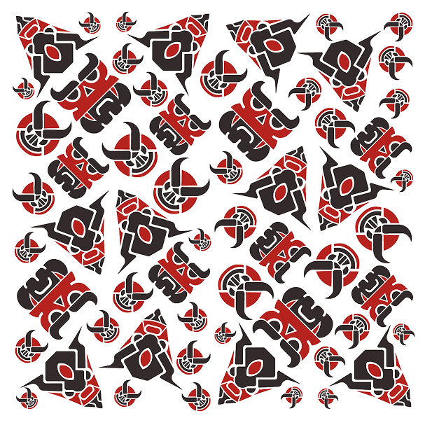
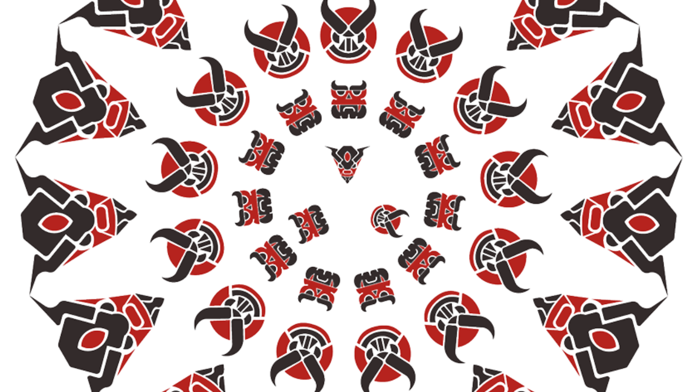
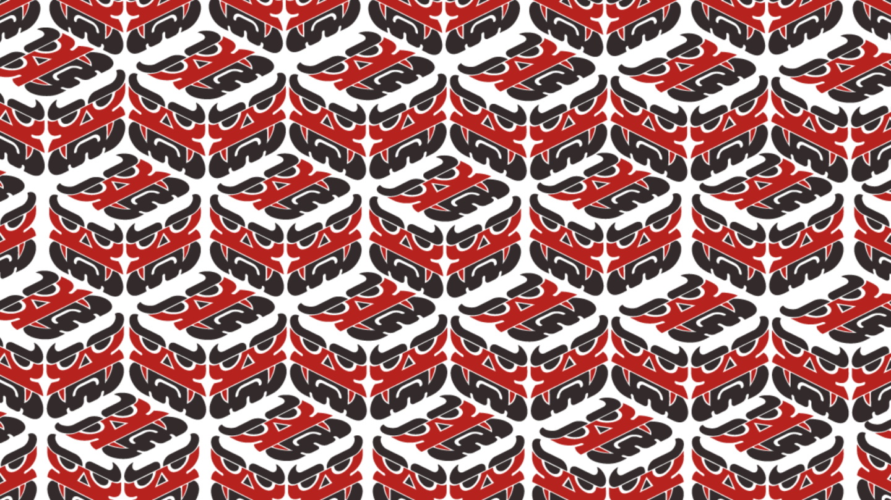

LA DIABLADA

Constituye una propuesta de diseño que busca rescatar y reinterpretar elementos clave de la identidad cultural ecuatoriana. La base conceptual del trabajo se nutre de la Sala de Oro del Museo Nacional del Ecuador, la cual alberga una impresionante colección de artefactos de oro pertenecientes a diversas culturas precolombinas, y de la tradicional festividad de la Diablada de Píllaro. En esta celebración, los participantes se disfrazan de diablos —quienes son los protagonistas—, ángeles y otros personajes fantásticos que sirven como motor visual para el desarrollo de las ilustraciones y máscaras presentadas. El desarrollo técnico del portafolio incluye un proceso detallado de exploración y creación de bocetos para definir tanto la forma como la tipografía de la identidad. La estética se consolida a través del uso de una paleta de colores intensos donde predominan los tonos rojos, granates y negros, utilizando códigos específicos como el #411230 y el #000000 para transmitir la fuerza del concepto.
This is a design proposal that seeks to recover and reinterpret key elements of Ecuadorian cultural identity. The conceptual foundation of the work draws from the Golden Hall of the National Museum of Ecuador, which houses an impressive collection of gold artifacts from various pre-Columbian cultures, and from the traditional festival of the Diablada de Píllaro. In this celebration, participants dress as devils—the protagonists—angels and other fantastic characters that serve as the visual engine for the development of the illustrations and masks presented. The technical development of the portfolio includes a detailed process of exploration and sketch creation to define both the form and the typography of the identity. The aesthetic is consolidated through the use of an intense color palette dominated by reds, garnets and blacks, using specific codes such as #411230 and #000000 to convey the strength of the concept.

